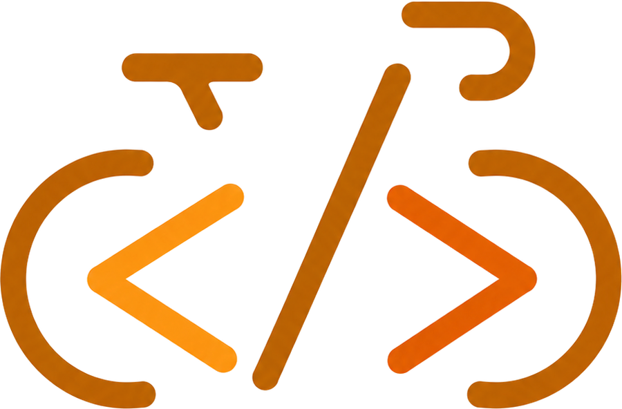
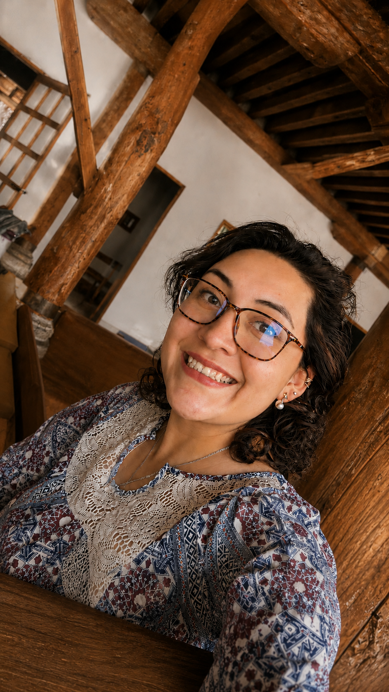
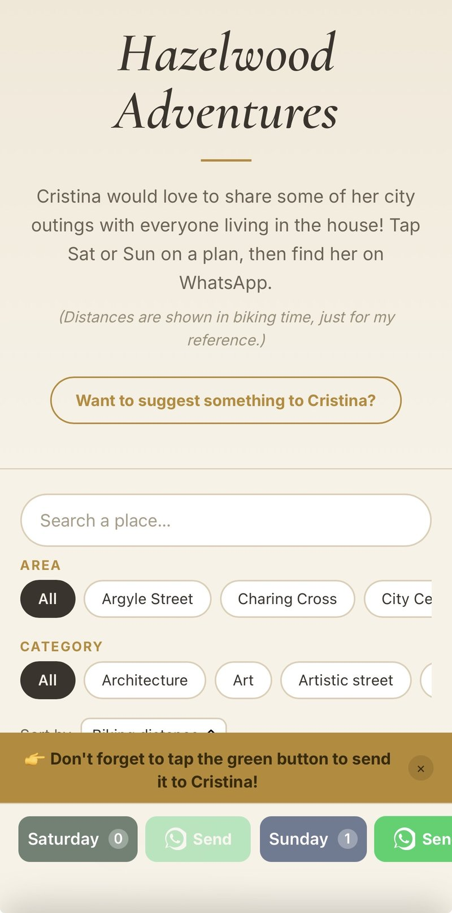
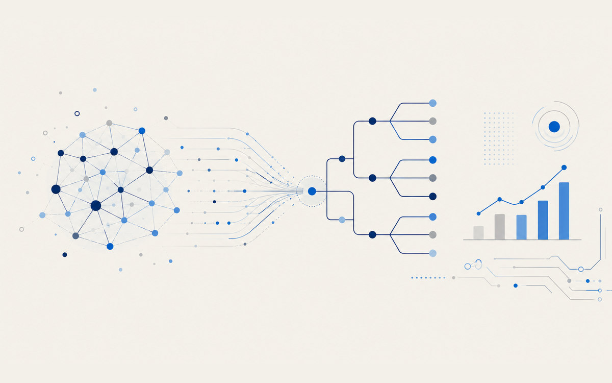

Philosopher by training, Data & Analytics Engineer by profession. I turn messy data into clear, production-grade analytics — and build small apps for the joy of good design


I started out in philosophy, chasing one question: how much of a person is simply given, and how much is shaped by the context they live in?
Years later, building data models for multinational teams, I realized I'd never stopped asking it — and that it had brought many more questions with it. A model, after all, is just a claim about what a thing really is, and what it leaves out. I love asking questions, and trying to answer them with data.
"Philosopher by training, Data & Analytics Engineer by profession — I care about the same thing in both: getting to what's actually true."
Today I design end-to-end data solutions, from raw records to the chart someone actually makes a decision with. I try not to be a one-vendor person: I've built on Databricks, Microsoft Fabric and Power BI, and I'm equally at home on the Google side, in Looker, Tableau, QlikView, or in Streamlit, where a bit of Python and HTML is often the fastest honest answer. The tool follows the problem, not the other way around.
What I care about most is the whole chain. A flawless Medallion architecture is worth nothing if the final chart makes no sense to the person reading it, and the prettiest dashboard is worth nothing if the data underneath it was never properly thought through. Cleaning, modelling, the semantic layer, the visual design, and the integrations with other apps when the process needs them: I like owning the full path rather than one slice of it.
Off the clock, I'm on my bike, building small web apps, or in community and volunteer work.
Seven years turning business questions into trusted, production-grade data. I work across stacks rather than inside one, and I care about the full path: how the data is cleaned and structured, and how the final chart reads to someone who has never seen it before.
A mix of enterprise data work and personal projects I shipped end to end — because I care as much about the experience of using a thing as about the architecture behind it.

Designed and validated enterprise data models across Databricks and Microsoft Fabric using Medallion Architecture — trusted Gold-layer datasets powering Power BI reporting for commercial and revenue-management teams, plus the data-quality work behind reliable numbers.

Peer-reviewed paper on modeling digital-media adoption in investment banking. Vega Ledesma, Hernández Márquez & Chávez Arrieta (2020), Research in Computing Science, 149(8), 123–134.
Delivered end-to-end analytics products for commercial operations across LATAM; designed and validated enterprise data models in Databricks & Fabric; reconciled millions of records across Salesforce, SharePoint and enterprise platforms through UAT to reliable releases.
Built analytics products for Revenue Management; SQL validation across Bronze, Silver and Gold layers; root-cause analysis across enterprise pipelines to reduce production incidents.
Modeled multi-million-record telecom datasets to forecast weekly mobile data consumption per vehicle; built an automated Python/AWS reporting pipeline and self-service analytics apps.
Led digital transformation, implementing a cloud-based IT support platform (sub-24h resolution) and applying NLP to streamline ticket classification from 29 categories to 10.
Because a portfolio that only shows the work misses the person doing it.
The bike is what I do when I'm not solving anything — just pedalling, watching the road, being present.
Giving time is a constant for me, whatever form it takes. One of those has been mentoring young female university leaders through IDEM with IPADE Business School. Another was with Stichting Soka, coordinating cultural events and building tools for volunteers.
I'm open to Data & Analytics Engineering roles in the Netherlands — available immediately, open to visa sponsorship (Kennismigrant), around Brainport / North Brabant. If anything here resonated, I'd love to hear from you.
Available immediately
Open to Kennismigrant sponsorship
Focus: Brainport / North Brabant